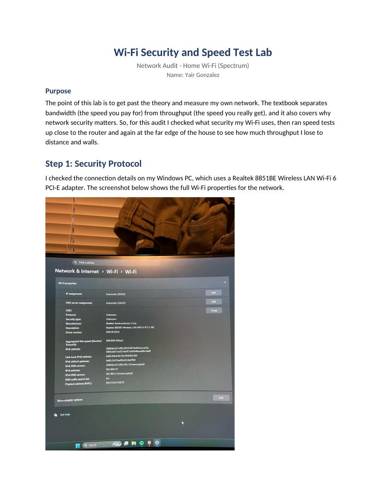

I found that the biggest thing I took away was the distinction between bandwidth and throughput. When a company says it will deliver an internet service at a certain speed, this is bandwidth. I also discovered that distance from a router, walls, and security features can have a big impact on how effectively your Wi-Fi connection functions. The reason why this is relevant in the real world is because both individuals and organizations want to know if their networks are functioning properly (i.e., fast enough, dependable enough, and secure enough) in the physical environment in which they will be using them.